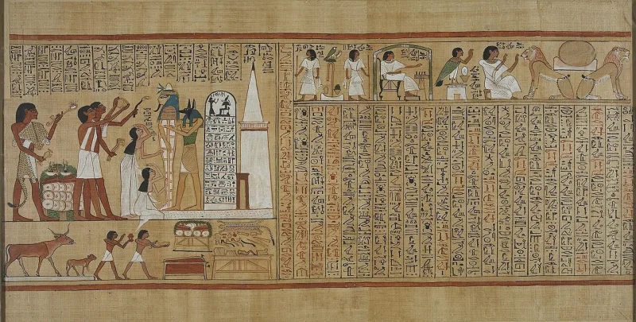

Abraham's papyrus was a Theban priest's funeral text
UnrefutedNo good counter-argument has been published by LDS scholars.
Why this case is different from all the others
The source document survives. For the Book of Mormon the plates are gone.
Here, we have the papyri.
What happened
In 1835 Joseph Smith bought Egyptian papyri from a travelling mummy exhibition. He declared one roll to be "the writings of Abraham while he was in Egypt" and published the Book of Abraham in 1842.
The papyri were thought lost, then rediscovered in 1966.
What they turned out to be
Ordinary Egyptian funeral texts. A Book of Breathings, made for a Theban priest named Hor, from about the second century BC.
That is roughly 1,500 years after Abraham. Every Egyptologist who has looked at them agrees, including Latter-day Saint ones.
Their answer, at full strength
Two defences, both in the church's own essay. The missing-scroll idea says the surviving pieces are a small remnant.
The Abraham text was on a part now lost. The catalyst idea says the papyri only prompted revelation.
On that view the words were never on them at all.
How strong is this argument?
Strong for you — this is the single most testable claim in the whole section. But note what the catalyst theory concedes: that the words are not on the papyri at all.
What to say
"The church says Egyptologists read these differently than he did. What do you make of that?"



How they answer this — at its strongest
Either the long roll is lost, or the papyri only prompted what God gave him.
Two defences, both backed in the church's own essay.
The first is the missing-scroll theory, from John Gee and Kerry Muhlestein at BYU. The fragments we have are a small remnant. Eyewitnesses describe a long roll. Gee works out that about 314 centimetres of the Hor roll are missing. And much of the collection is thought to have burned in the Chicago fire of 1871. On that view the Abraham text sat on papyrus we do not have.
The second is the catalyst theory. Joseph's study of the papyri 'provided an occasion for meditation, reflection, and revelation'. God then gave him a revelation about Abraham 'even if that revelation did not directly correlate to the characters'.
Two supports follow. The Kirtland Egyptian Papers may be a later attempt by scribes to work backwards from a text already given. And apologists point to old parallels for content not in Genesis. Abraham nearly sacrificed. Abraham teaching the stars. And the name 'Olishem', which may match the attested place-name Ulisum. Those sit in traditions outside the Bible that Smith is unlikely to have known.
The verdict
Strong for you: the two defences are each fair, and they cancel each other.
This is the strongest outside test in the whole corpus. The source document exists, and Egyptology is a mature science with no Latter-day Saint stake in it. The church has conceded the core fact in an official essay. Robert Ritner's complete edition of 2011 settled the reading.
The two defences each make sense alone. Together they are telling, because they contradict each other. Either the Abraham text was on a lost papyrus, which makes the translation real and the fragments beside the point. Or the papyri were only a prompt, which makes the lost scroll beside the point.
The missing-scroll theory has one problem it has not overcome. Smith's own Egyptian Alphabet and Grammar lines up characters from the surviving fragment against verses of the Book of Abraham. That puts his working source in documents we hold.
The catalyst theory cannot be tested. And it dissolves the word 'translation' as the church used it for 130 years, which drains force from the Book of Mormon claim too. Parallels such as Olishem are of the weak type flagged elsewhere, and cannot offset a direct mismatch in decipherment.
Sources
- Robert K. Ritner (University of Chicago Oriental Institute), The Joseph Smith Egyptian Papyri: A Complete Edition (Signature Books, 2011)
- Robert K. Ritner, 'The "Breathing Permit of Hor" Thirty-four Years Later,' Dialogue 33/4 (2000)
- Institute for Religious Research, 'Translation and Historicity of the Book of Abraham — A Response'
- Gospel Topics Essay — official concession: 'the characters on the fragments do not match the translation given in the book of Abraham'